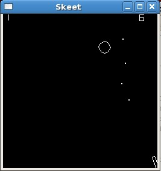

CS 241 Project - Skeet
Overview
Skeet or Trap Shooting is a game played by hunters where a clay pigeon is ejected from a throwing device and a marksman attempts to shoot them with a shotgun. Sadly, many clay pigeons (also called "targets" or "birds") are lost during the typical game. Though this sport is an Olympic event and played the world over, it is far too dangerous to play in the computer lab. Therefore, we will build a safer version where nothing but pixels are shot.
This program will be written using the same simplified OpenGL libraries as the other projects of this semester. See this link for information about how to configure your environment for OpenGL development..
Instructions
Your assignment is to create a game that simulates skeet shooting. On the left side of the screen, clay pigeons are randomly shot across the screen. On the bottom right corner of the screen, the "marksman" (the term is used very loosely here) aims his rifle. Each match ends when either a bullet from the rifle destroys the pigeon or when the pigeon exits the screen (called "birds away").
A working version of the game is available to you at:
The following shows the game in action:
Game Rules and Specification
- Whenever there is no pigeon on the screen, a new one is created at random.
- To make it more of a challenge, there are three types of pigeons:
- Standard Bird
- Rendered as a circle with a 20px diameter.
- A
drawCirclefunction is included in the uiDraw library to assist you. - Destroyed with one hit.
- 1 Point is awarded for hitting it.
- Tough Bird
- Rendered as a circle with a number inside of it.
- A
drawToughBirdfunction is included in the uiDraw library to assist you. - The Tough Bird should move more slowly than the others as defined below.
- It takes 3 hits to destroy this bird.
- 1 Point is awarded for each hit.
- A bonus of 2 points is awarded if it is destroyed. (3 points per hit, plus the 2 point bonus, means 5 points can be earned.)
- Sacred Bird
- Rendered as a star.
- A
drawSacredBirdfunction is included in the uiDraw library to assist you. - This bird should not be hit.
- It is destroyed with a single hit.
- A penalty of 10 points is lost if this bird is hit.
- The pigeon type, direction, velocity, and timing to release (delay) are random according to the following constraints:
- The initial position of the bird is anywhere along the left side the screen
- If the bird starts on the top half of the screen, it should have a generally downward velocity (down and to the right at amounts defined below).
- If the bird starts on the bottom half of the screen, it should have a generally upward velocity (up and to the right at amounts defined below).
- The horizontal component of the velocity should be between 3 and 6 pixels/frame.
- The vertical component of the velocity should be between -4 and +4 pixels/frame (positive or negative depending on whether it starts on the top or bottom half of the screen).
- To give the user a greater chance to hit the Tough Bird, it should move more slowly than the others. In particular, its horizontal velocity should be taken from the range: 2 to 4, and it's vertical velocity from the range -3 to +3.
- A delay of up to 1 second should be introduced before the first bird is released or after each round before the next one is released.
- Rifle
- Rendered as a rectangle.
- A
drawRectfunction is included in the uiDraw library to assist you. - The aim is controlled with the left and right arrows.
- Each arrow press should change the aim 3 degrees.
- The rifle should not be able to aim off the screen. (You must limit its movement to 90 degrees.)
- Bullets
- Rendered as a dot.
- A
drawDotfunction is included in the uiDraw library to assist you. - There is no limit to the number of bullets.
- Pressing the space bar fires a new bullet.
- New bullets should be aimed in the direction of the rifle.
- Bullets travel at 10 pixels/frame at that angle at which they are fired.
- Bullets should be removed if they leave the borders of the screen.
Hints and examples
The following examples may be helpful:
- A random function is provided in the uiDraw library that makes it easier to use C++ random numbers. You can call it to get a random number from 2 to 4, as follows:
- Trig functions (sin, cos, tan) will likely be helpful in determining the x and y components of an angle. They can be found in the
cmathlibrary and used as follows. (Note that they expect radians rather than degrees.)
Getting Started
You will use the same framework and classes that you used for MoonLander. You can copy over a fresh set of files from: /home/cs241/skeet/*.
The finer details: the files in this directory have the same core libraries as used in MoonLander, but do not have a Ground class, and have removed MoonLander specific elements from the Game Class. Also, the makefile has been updated to have Skeet header information, and no longer contains rules to build the ground class. Also, the uiDraw library has been updated so the drawNumber function can now handle negatives.
Architectural Design
The entire program will need to be implemented using the principles of encapsulation. Thus, you need to think about the different components (classes) that you will need in the game, and their various actions (methods) and properties (member variables). Before you start programing, you will need to produce UML class diagrams for each of the classes you will be using. Please pay special attention to the design of these components, so they can be as general-purpose as possible. You will want to reuse some of them in future projects.
In addition, for this project you will be expected to use the principles of inheritance and polymorphism. These are the topics we will be studying over the next two weeks.
In order to demonstrate correct use of these design principles, in your game class, you need to have a pointer to your base class (e.g., Bird*) that you use to point to each different bird that is created. You should create each new bird via "new" and then make sure to "delete" it when it is dead. In other words, you should NOT have three different bird objects in your game class.
Assignments
You have three weeks to complete this project, with milestone submissions due at the end of the first and second weeks. Please note that this is a challenging project that will require you to apply several new and challenging topics.
This project will be broken up into the following assignment submissions:
Expectation to Excel
As explained in more detail in the Project link above, the requirements presented here are simply a base standard. To receive up to 100% on this assignment you are expected to show creativity and excel above and beyond what is specifically required.